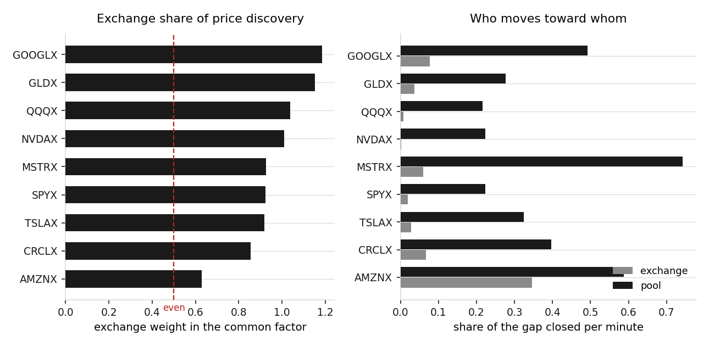

24 xStocks quoted at once on Gate and on Solana pools, 29 July 2026. The quieter the chain, the more the exchange prints against it.
| token | exchange weight | exchange corrects | pool corrects | paired minutes |
|---|---|---|---|---|
| GOOGLX | 1.19 | +0.08 | 0.49 | 119 |
| GLDX | 1.15 | +0.04 | 0.28 | 185 |
| QQQX | 1.04 | +0.01 | 0.22 | 450 |
| NVDAX | 1.01 | +0.00 | 0.22 | 452 |
| MSTRX | 0.93 | -0.06 | 0.74 | 225 |
| SPYX | 0.92 | -0.02 | 0.22 | 120 |
| TSLAX | 0.92 | -0.03 | 0.33 | 480 |
| CRCLX | 0.85 | -0.07 | 0.40 | 372 |
| AMZNX | 0.63 | -0.35 | 0.59 | 82 |

| token | minutes the pool traded | exchange 24h | on-chain 24h | on-chain liquidity |
|---|---|---|---|---|
| VTIX | 1 | $29,243 | $4 | $1,329 |
| AZNX | 3 | $35,041 | $60 | $3,674 |
| UNHX | 4 | $82,147 | $535 | $11,379 |
| NFLXX | 5 | $116,413 | $33 | $6,003 |
| ACNX | 7 | $127,448 | $24 | $225 |
| MCDX | 8 | $81,439 | $900 | $14,551 |